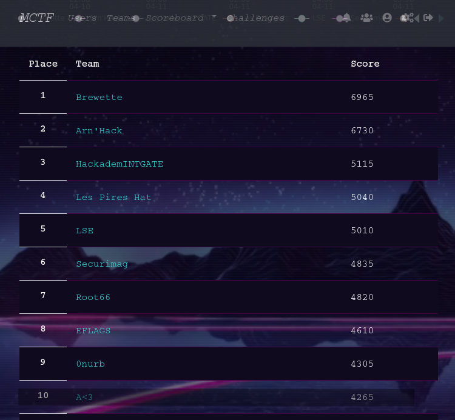
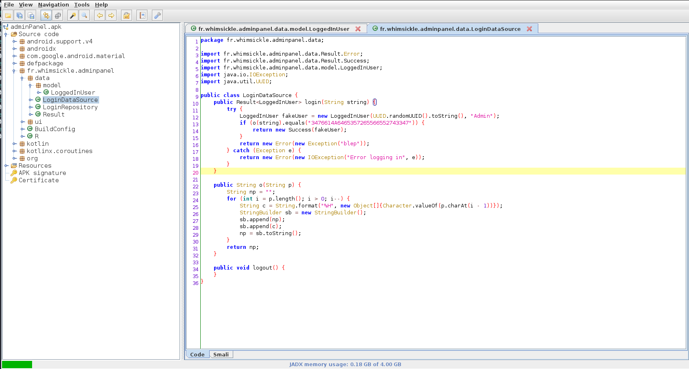

MCTF2021 - Android - adminPanel
MidnightflagCTF2021
Organisé par l’ESN’hack. La CTF c’est déroulée la nuit du 10/04/21 au 11/04/21. Grâce à ABH le pro de l’OSINT, on termine dans le TOP 10 du classement général.

TL;DR
Ce post est dédié à la résolution du challenge AdminPanel.
Basiquement pas besoin d’installer l’application des outils décompilant les apk sont nombreux.
Voilà ma démarche de réfléxion pour résoudre ce challenge.
- Décompilation via
jadx-gui - Compréhension de l’algo et identification du problème
- Implémentation en python
Task
Un lycéen a créé une application où seulement un seul utilisateur peut se connecter, et il a implémenté une vérification “maison”.
Curieux, vous avez récupéré l’application, pour voir si vous pouvez vous connecter !
Décompilation
La décompilation se fait facilement avec jadx
La classe fr.whimsickle.adminpanel.data.LoginDataSource contient les éléments permettant de dériver le mot de passe.

Compréhension de l’algorithme
L’algorithme de vérification du mot de passe est extrêmement simple, il prend juste le vrai mot de passe l’inverse et le met en hexadécimale
Implémentation
pwd = "3476614A6465357265566552743347"
rev_pwd = bytes.fromhex(pwd)[::-1].decode()
print("MCTF{" + rev_pwd + "}")
Flag
MCTF{G3tReVer5edJav4}